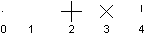
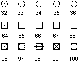

Autodesk AutoCAD 2021: ActiveX Developer's Guide > Create and Edit AutoCAD Entities > About Creating Objects (VBA/ActiveX) >
Point objects can be useful, for example, as node or reference points that you can snap to and offset objects from.
You can set the style of the point and its size relative to the screen or in absolute units.
The AutoCAD PDMODE and PDSIZE system variables control the appearance of Point objects. The PDMODE values 0, 2, 3, and 4 specify a figure to draw through the point. A value of 1 selects nothing to be displayed.

Adding 32, 64, or 96 to the previous value selects a shape to draw around the point in addition to the figure drawn through it:

PDSIZE controls the size of the point figures, except for PDMODE values 0 and 1. A 0 setting generates the point at 5 percent of the graphics area height. A positive PDSIZE value specifies an absolute size for the point figures. A negative value is interpreted as a percentage of the viewport size. The size of all points is recalculated when the drawing is regenerated.
After you change PDMODE and PDSIZE, the appearance of existing points changes the next time the drawing is regenerated.
To set PDMODE and PDSIZE, use the SetVariable method.
The following code example creates a Point object in model space at the coordinate (5, 5, 0). The PDMODE and PDSIZE system variables are then updated.
Sub Ch4_CreatePoint() Dim pointObj As AcadPoint Dim location(0 To 2) As Double ' Define the location of the point location(0) = 5#: location(1) = 5#: location(2) = 0# ' Create the point Set pointObj = ThisDrawing.ModelSpace.AddPoint(location) ThisDrawing.SetVariable "PDMODE", 34 ThisDrawing.SetVariable "PDSIZE", 1 ZoomAll End Sub